Experiment 5: Chemical Equilibrium
Interactive practical companion for SK015
Start here
V6 Visual Lab🎯 Objectives
- To study the effect of concentration and temperature on chemical equilibrium.
- To determine the equilibrium constant, Kc, of a reaction.
🧠 Quick concept
A system at equilibrium is dynamic. When concentration or temperature is changed, the equilibrium position may shift to counteract the disturbance.
🧠 Quick readiness check
Try before the practicalA system is at equilibrium when:
Before you begin
Part A — Effect of Concentration
Le ChatelierThe thiocyanatoiron(III) complex is formed when Fe3+ reacts with SCN−.
The manual describes the Fe3+ solution as yellowish-brown and the complex as blood-red.
Step A1 — Prepare the equilibrium mixture
Place 2 mL of 0.1 M Fe(NO3)3 solution and 3 mL of 0.1 M KSCN solution into a 100 mL beaker.
Then add 50 mL distilled water and mix.
Step A2 — Divide the mixture
Place approximately 5 mL of the solution into each of four test tubes.
Test tube IV is the control.
🔬 Visual procedure guide
Watch the setupUse the illustrations as a visual reminder of the experimental sequence. Follow the supplied manual for exact quantities and handling.
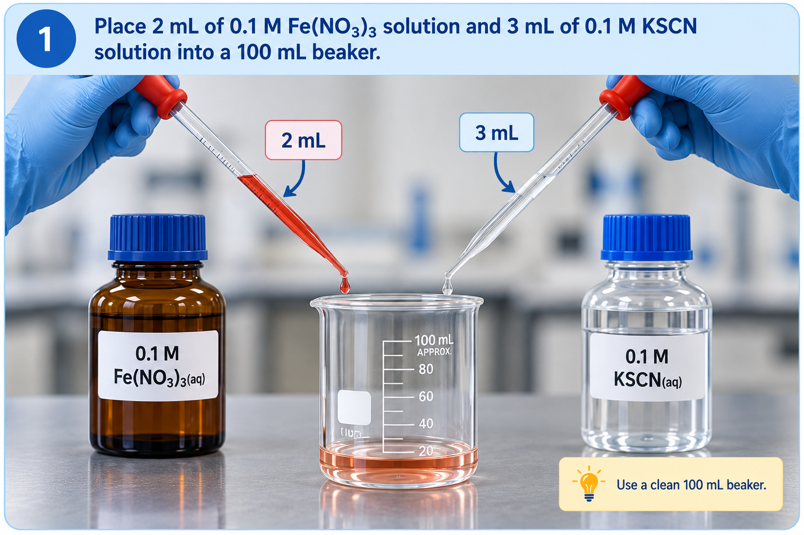
Prepare samples
Place 2 mL of 0.1 M Fe(NO3)3 solution and 3 mL of 0.1 M KSCN solution into a 100 mL beaker.
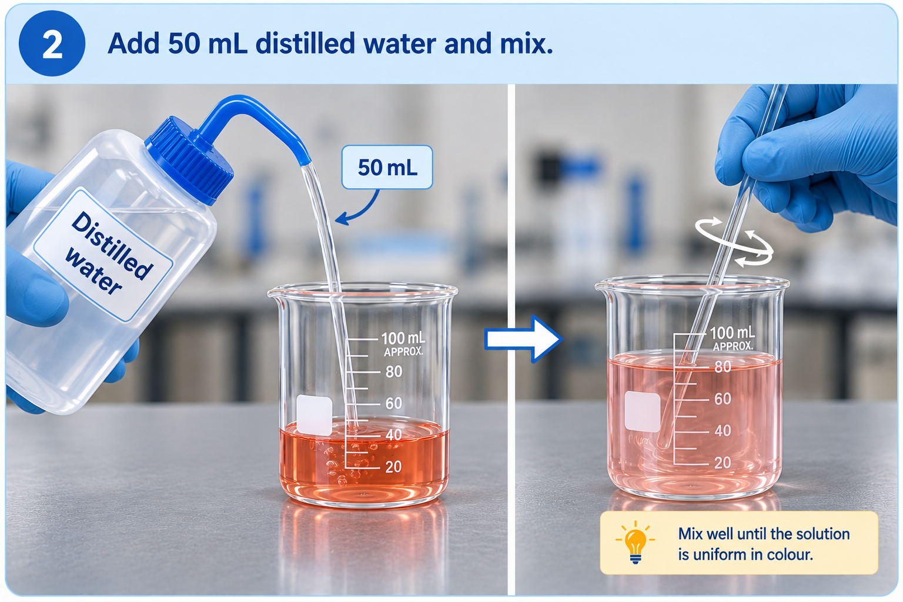
Add water
Then add 50 mL distilled water
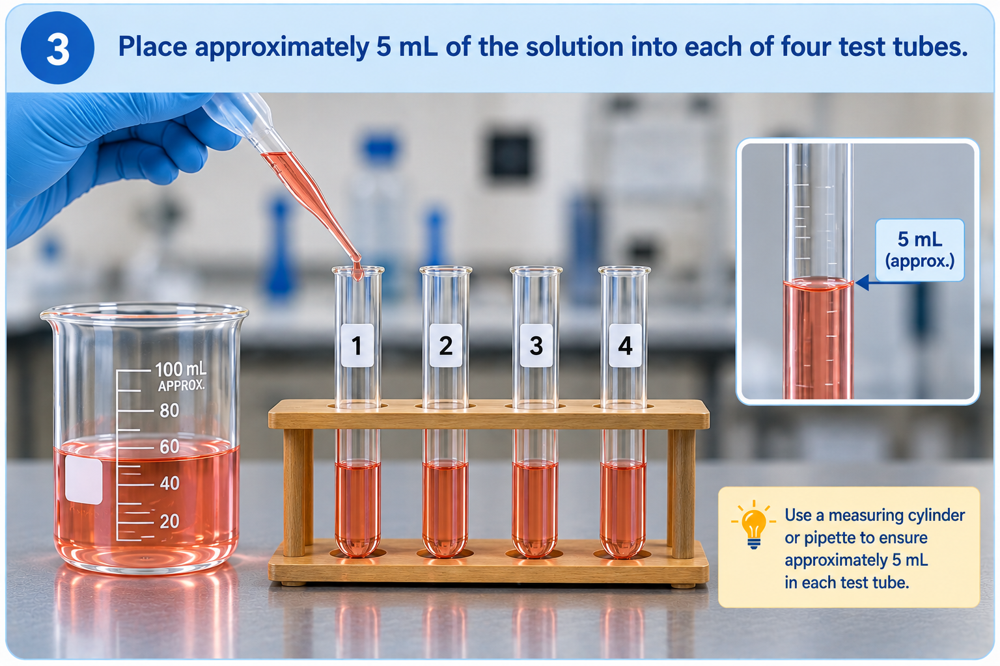
Divide the solution
Place approximately 5 mL of the solution into each of four test tubes and add treatment.
Observe and interpret
🧪 Test tube I
Treatment: Add 1 mL of 0.1 M Fe(NO3)3.
🧪 Test tube II
Treatment: Add 1 mL of 0.1 M KSCN.
🧪 Test tube III
Treatment: Add 6–8 drops of 2.5 M NaOH.
Part B — Effect of Temperature
TemperatureThe manual describes the hydrated cobalt(II) complex as pink and the tetrachlorocobaltate(II) complex as blue.
🔬 Visual procedure guide
Watch the setupUse the illustrations as a visual reminder of the experimental sequence. Follow the supplied manual for exact quantities and handling.
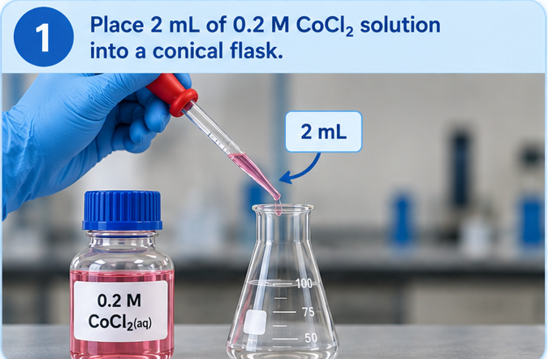
Step 1
Place 2 mL of 0.2 M CoCl2 solution into a conical flask.
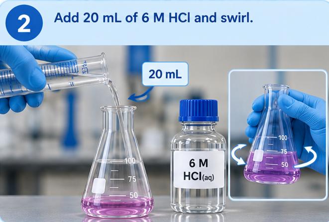
Step 2
Add 20 mL of 6 M HCl and swirl.
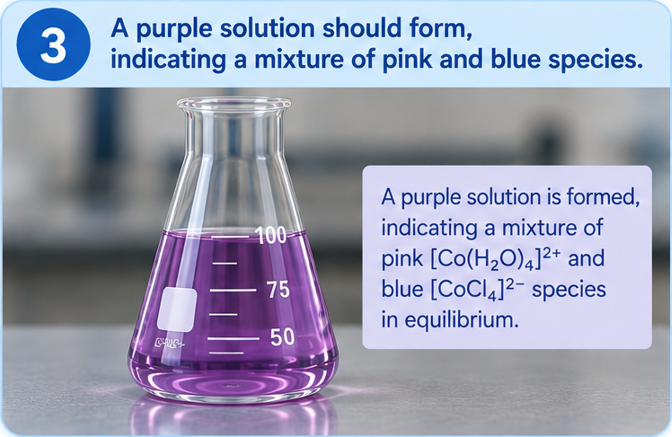
Step 3
A purple solution should form, indicating a mixture of pink and blue species.
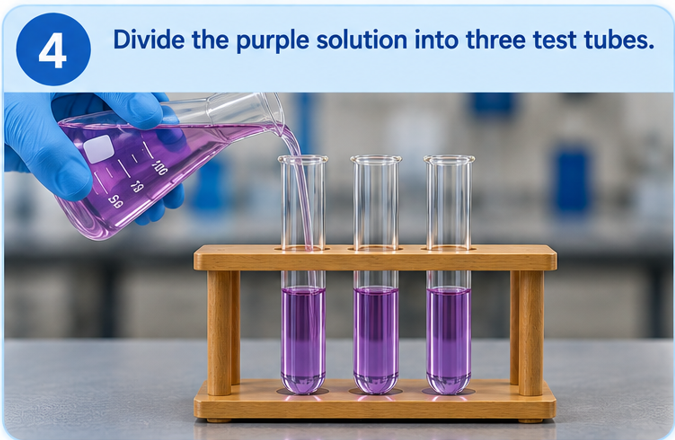
Step 4
Divide the purple solution into three test tubes.
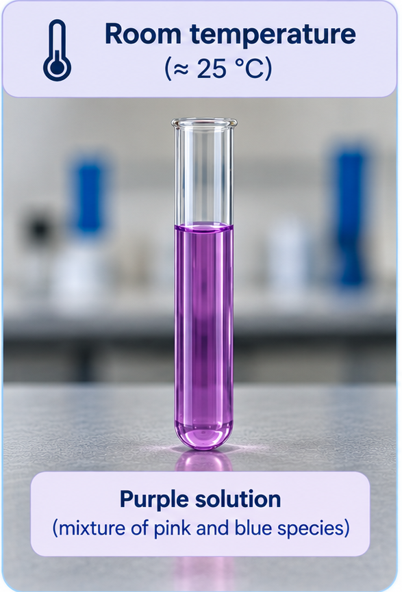
🌡️ Test tube I
Leave at room temperature.
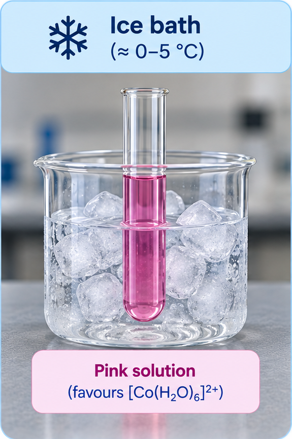
❄️ Test tube II
Place in an ice bath.
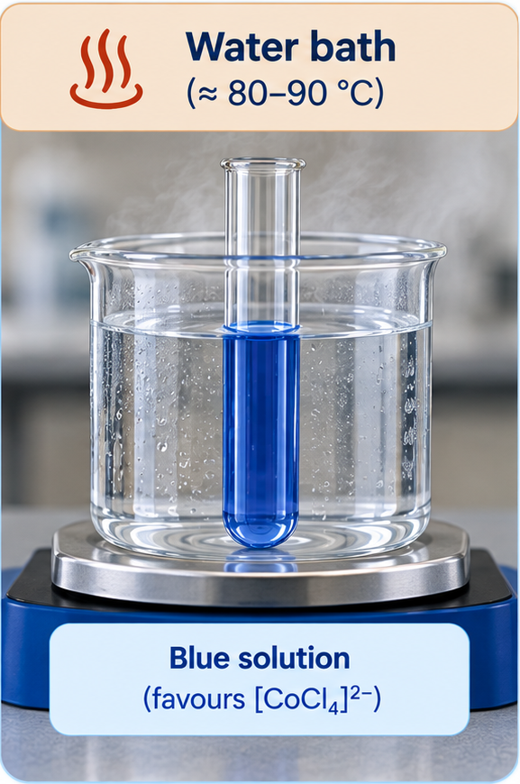
🔥 Test tube III
Place in a water bath at 80–90 °C.
🧠 Evidence check
Compare the colour observed at low and high temperature. Which observation should be used as evidence for the direction favoured by heating?
💭 Discussion prompt
Based on your observations, determine whether the forward reaction is exothermic or endothermic and explain your reasoning.
Part C — Determination of Kc
Guided calculation🧪 Step-by-step experimental procedure
The illustrations provide a visual guide to the sequence. Complete each laboratory step before moving to the calculation.
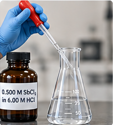
Using a pipette, transfer 5.0 mL of 0.5 M SbCl3 in 6 M HCl into a conical flask.
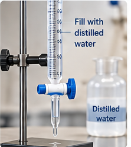
Fill the burette with distilled water and record the initial burette reading.
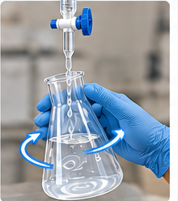
Carefully add distilled water from the burette while the conical flask is continuously swirled.
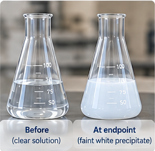
Continue adding distilled water until a faint white precipitate is obtained.
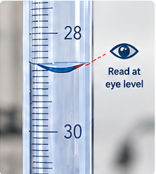
Record the final burette reading, then calculate the volume of water added from the initial and final readings.
📏 Calculation Step 1 — Volume of water added
Enter the initial and final burette readings.
🧪 Calculation Step 2 — Final volume of solution
The initial solution volume is 5.00 mL. Add the volume of water calculated in Step 1.
🧮 Calculation Step 3 — Equilibrium concentrations
Use the dilution equation:
For this experiment, use the initial concentrations 6.00 M HCl and 0.500 M SbCl3, with an initial volume of 5.00 mL.
HCl
6.00 × 5.00 = [HCl]eq × Vfinal
SbCl3
0.500 × 5.00 = [SbCl3]eq × Vfinal
⚗️ Calculation Step 4 — Determine Kc
Use the equilibrium expression from the experiment:
💭 Discussion prompt
Explain why the concentration of a pure liquid and a solid is excluded from the equilibrium constant expression for a heterogeneous system.
📝 Lab Report
EditableStudent details
Report contents
The generated report follows the requested structure: Title, Objectives, simplified Introduction, passive-voice Procedure, Results, Calculations, Discussions and Conclusion.